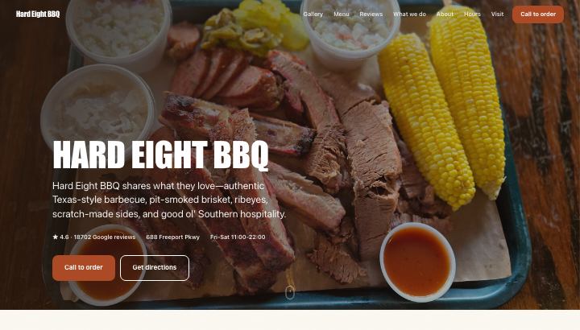

Hard Eight BBQ
Hard Eight is a smokehouse people already trust in huge numbers (18,700+ reviews at 4.6) and they have nine strong, appetite-driving photographs of pit meats and the stone-walled dining room — the site should look and feel like walking into that room, so the pictures lead and a trade-shop condensed type stamps the name over them rather than competing with them.
The signature mark: Setting the wordmark into the corner of a big smoker or brisket photo keeps the food as the hero while still stamping the name, like a brand burned into the wood.
What is on the page: photos, the numbers, the menu, reviews, what they offer, their own story, hours, how to reach them